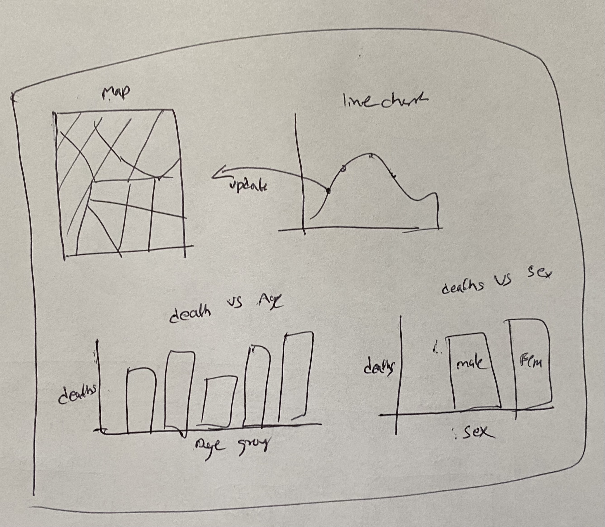
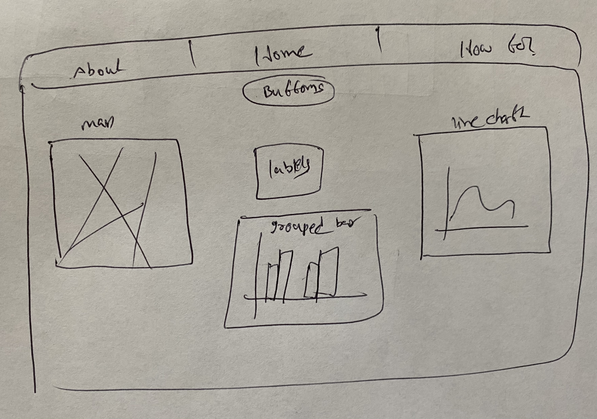

Hello, I am Sailesh Vemula, an Indian who is doing a Master's in Applied Data Science at Indiana University - Purdue University Indianapolis.
As part of my Data visualization course, I have done a project based on d3.js version 3. The project is about recreating earliest visualizations marvel John Snow's Cholera map Break out visualization. It enabled the analysts to know the reason for the breakout the Cholera, which is due to the contaminated water. This is the first one which enabled us to know the value of Data Visualization to know the patterns in the data changing.
- Firstly, I went through all the datasets like streets, pumps, deaths count, age, gender.
- After Brianstorming about how to plot the data, I understood that in order to know the specific location of person died of specific date, I have to do some data manipulation techniques.
- As there are different types of datasets like json, csv. I need to use different d3 functions to use different datasets.
- Made different rough sketches after which I figured out best way to represent dashboard.
- Below are few sketches I made
 - From coming from first sketch to final second sketch, it took several iterations involved.
- The Main reason for selecting the second design is that the first sketch requires to scroll down to see the full visualization. As this is not a good way of creating a dashboard, I opted the second sketch which is quite sufficient.
- The main problem is of enabling with color blindess tested colors
- Other is of fitting all the figures in the respective containers, this is done by giving container Ids and classes.
- Mainly after creating the navigation to traverse over the pages, I have added the filter buttons in order to filter out data in the dashboard. After this, created three container left, middle and right. In left , added Map. In the middle container, added the bar chart and labels. In the right container, added the time series line chart
- For drawing the map, I have used the streets.json file available in the media folder. It consists of x and y coordinates of all the streeets required to draw the map. Using the path element, plotted the streets and completed the map. For setting the pumps locations on the map now plotted, used the same svg container and using the pumps.csv file, I have plotted the pumps. But In here, I have used the pump image inorder to clearly demonstrate the increase of deaths around it. Plotting the people died location based on the geder, age, date is the main challenge I Have faced. This is done by writing different funcions to plot using the age or gender on the map. For the map, I have added the zoom and drag capabilities. So, that we can zoom and see clearly the location of the people.
- The line chart is drawn using deaths_age_sex.csv and deathdays.csv based on the days they have died. I have added an interaction to the maps and labels. So that we can know the exact location of the person died. I have added the mouseover and mouseout tansitions here in order make the interaction more effective.
- The Bar chart is done by creating a dataset called data.json which consists of the age , gender based deaths data. With the help of this I have plotted the bar chart and added the apropriate labels, titles and legends over the same container.
- The labels legend are arranged such that it changes over the filter the user will creates. It is added in the middle container.
- The final goal of doing all this exercise is to analyse the reason for the outbreak.
- First, people think that this is because of the water or the age groups. But after, going through the John snow's visialization, it is understood that the spread is more across the conatminated water loactions (pumps).
- While coming to age groups, After plotting the bar chart based on the age in dashboard. I thought of doing pie chart depicting the number of deaths across each group. From the pie, it is evident that the infants and elders are mostly getting affected. While the Gender is not much of influencing factor.
- So, finally the outbreak is seems to be started and spreading near the contaminated water which is around brewery and the death count hit at peak on 1st September 1854. And infants and Elders are to be kept very safe as they are the mostly affected ones.
You can see below the pie chart depicting more deaths are among infants and elders.